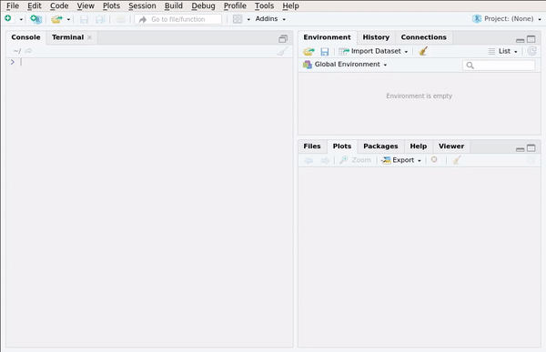

Modern R with the tidyverse
2019-08-17
Preface
Note to the reader
This book is still being written. Chapters 1 to 8 are almost ready, but more content is being added (especially to chapter 8). 9 and 10 are empty for now. Some exercises might be at the wrong place too and more are coming.
You can purchase an ebook version of this book on leanpub.
If you already like what you read, you can support me by buying me a coffee or paypal.me.
What is R?
Read R’s official answer to this question here. To make it short: R is a multi-paradigm (procedural, imperative, object-oriented and functional)1 programming language that focuses on applications in statistics. By statistics I mean any field that uses statistics such as official statistics, economics, finance, data science, machine learning, etc. For the sake of simplicity, I will use the word “statistics” as a general term that encompasses all these fields and disciplines for the remainder of this book.
Who is this book for?
This book can be useful to different audiences. If you have never used R in your life, and want
to start, start with Chapter 1 of this book. Chapter 1 to 3 are the very basics, and should be
easy to follow up to Chapter 9.
Starting with Chapter 9, it gets more technical, and will be harder to follow. But I suggest
you keep on going, and do not hesitate to contact me for help if you struggle! Chapter 9
is also where you can start if you are already familiar with R and the {tidyverse}, but not
functional programming. If you are familiar with R but not the {tidyverse} (or have no clue
what the {tidyverse} is), then you can start with Chapter 4. If you are familiar with R, the
{tidyverse} and functional programming, you might still be interested in this book, especially
Chapter 9 and 10, which deal with package development and further advanced topics respectively.
Why this book?
This book is first and foremost for myself. This book is the result of years of using and teaching
R at university and then at my jobs. During my university time, I wrote some notes to help me
teach R and which I shared with my students. These are still the basis of Chapter 2. Then, once
I had left university, and continued using R at my first “real” job, I wrote another book that
dealt mostly with package development and functional programming. This book is now merged to this
one and is the basis of Chapters 9 and 10. During these years at my first
job, I was also tasked with teaching R. By that time, I was already quite familiar with the
{tidyverse} so I wrote a lot of notes that were internal and adapted for the audience of my
first job. These are now the basis of Chapters 3 to 8.
Then, during all these years, I kept blogging about R, and reading blogs and further books. All
this knowledge is condensed here, so if you are familiar with my blog, you’ll definitely recognize
a lot of my blog posts in here. So this book is first and foremost for me, because I need to write
all of this down in a central place. So because my target audience is myself, this book is free. If
you find it useful, and are in the mood of buying me a coffee, you can, but if this book is not
useful to you, no harm done (unless you paid for it before reading it, in which case, I am sorry
to have wasted your time). But I am quite sure you’ll find some of the things written here useful,
regardless of your current experience level with R.
Why modern R?
Modern R instead of “just” R because we are going to learn how to use modern packages (mostly
those from the tidyverse) and concepts, such as functional
programming (which is quite an old concept actually, but one that came into fashion recently). R is
derived from S, which is a programming language that has roots in FORTRAN and other languages too.
If you learned R at university, you’ve probably learned to use it as you would have used FORTRAN;
very long scripts where data are represented as matrices and where row-wise (or column-wise)
operations are implemented with for loops. There’s nothing wrong with that, mind you, but R
was also influenced by Scheme and Common Lisp, which are functional programming languages.
In my opinion, functional programming is a programming paradigm that works really well when dealing
with statistical problems. This is because programming in a functional style is just like
writing math. For instance, suppose you want to sum all the elements of a vector. In mathematical
notation, you would write something like:
\[ \sum_{i = 1}^{100} x_{i} \]
where \(x\) is a vector of length 100. Solving this using a loop would look something like this:
This does not look like the math notation at all! You have to define a variable that will hold
the result outside of the loop, and then you have to define res as something plus res inside
the body of the loop. This is really unnatural. The functional programming approach is much
easier:
We will learn about Reduce() later (to be more precise, we will learn about purrr::reduce(),
the “tidy” version of Reduce()), but already you see that the notation looks a lot more
like the mathematical notation.
At its core, functional programming uses functions, and functions are so-called first
class objects in R, which means that there is nothing special about them… you can pass them to
other functions, create functions that return functions and do any kind of operation on them just as
with any other object. This means that functions in R are extremely powerful and flexible tools.
In the first part of the book, we are going to use functions that are already available in R, and
then use those available in packages, mostly those from the tidyverse. The tidyverse is a
collection of packages developed by Hadley Wickham, and several of his colleagues
at RStudio, Inc. By using the packages from the tidyverse and R’s built-in functional programming
capabilities, we can write code that is faster and easier to explain to colleagues, and also easier
to maintain. This also means that you might have to change your expectations and what you know
already from R, if you learned it at University but haven’t touched it in a long time. For example
for and while loops, are relegated to chapter 8. This does not mean that you will have to wait for
8 chapter to know how to repeat instructions N times, but that for and while loops are tools that
are very useful for very specific situations that will be discussed at that point.
In the second part of the book, we are going to move from using R to solve statistical problems to developing with R. We are going to learn about creating one’s own package. If you do not know what packages are, don’t worry, this will be discussed just below.
What is RStudio?
RStudio is a modern IDE that makes writing R code easier. The first thing we are going to learn is how to use it. R and RStudio are both open source: this means that the source code is freely available on the internet and contributions by anyone are welcome and integrated; provided they are meaningful and useful.
What to expect from this book?
The idea of Chapters 1 to 7 is to make you efficient with R as quickly as possible, especially if you already have prior programming knowledge. Starting with Chapter 8 you will learn more advanced topics, especially programming with R. R is a programming language, and you can’t write “programming language” without “language”. And just as you wouldn’t expect to learn French, Portuguese or Icelandic by reading a single book, you shouldn’t expect to become fluent in R by reading a single book, not even by reading 10 books. Programming is an art which requires a lot of practice. Teach yourself programming in 10 years is a blog post written by Peter Norvig which explains that just as with any craft, mastering programming takes time. And even if you don’t need or want to become an expert in R, if you wish to use R effectively and in a way that ultimately saves you time, you need to have some fluency in it, and this only comes by continuing to learn about the language, and most importantly practicing. If you keep using R every day, you’ll definitely become very fluent. To stay informed about developments of the language, and the latest news, I advise you read blogs, especially R-bloggers which aggregates blog posts by more than 750 blogs discussing R.
So what you can expect from this book is that this book is not the only one you should read.
Prerequisites
R and RStudio are the two main pieces of software that we are going to use. R is the programming language and RStudio is a modern IDE for it. You can use R without RStudio; but you cannot use RStudio without R.
If you wish to install R and RStudio at home to follow the examples in this book you can do it as
both pieces of software are available free of charge (paid options for RStudio exist, for companies
that need technical support). Installation is simple, but operating system dependent. To download
and install R for Windows, follow this link.
For macOS, follow this one. If you run a GNU+Linux
distribution, you can install R using the system’s package manager. On Ubuntu, install r-base.
For RStudio, look for your operating system here.
What are packages?
There is one more step; we are going to install some packages. Packages are additional pieces of
code that can be installed from within R with the following function: install.packages(). These
packages extend R’s capabilities significantly, and are probably one of the main reasons R is so
popular. As of November 2018, R has over 13000 packages.
To install the packages we need, first open RStudio and then copy and paste this line in the console:
install.packages(c("tidyverse", "rsample", "recipes", "blogdown" ,"yardstick", "parsnip", "plm", "pwt9",
"checkpoint", "Ecdat", "ggthemes", "ggfortify", "margins", "janitor", "rio",
"colourpicker", "glmnet", "lhs", "mrlMBO", "mlbench", "ranger"))
or go to the Packages pane and then click on Install:

In this book we are going to focus on R’s functional programming capabilities↩